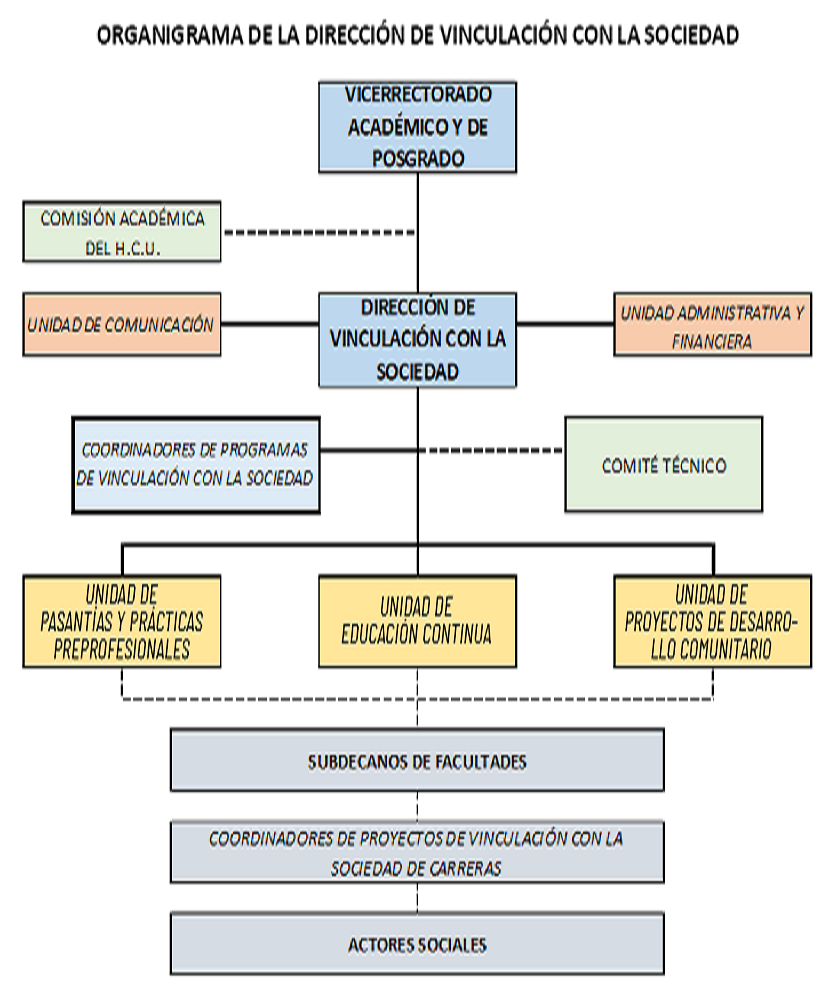

Fecha: 14 de enero de 2024
¿QUÉ ES VINCULACIÓN CON LA SOCIEDAD?
La Vinculación con la Sociedad define un conjunto de programas, políticas y de actividades administrativas, así como acciones y proyectos de enlace, mediante las cuales la Universidad genera en la comunidad universitaria y en la sociedad, capacidades e intercambio de conocimientos con pertinencia a los dominios académicos y líneas de investigación que propicien la formulación de soluciones objetivos a las demandas sociales, que promuevan respecto a las particulares manifestaciones culturales y a la naturaleza.
De conformidad a la Normativa Legal vigente, es requisito previo a la obtención del título universitario que los estudiantes realicen servicios a la comunidad mediante Prácticas Pre profesionales, debidamente monitoreados en los campos de su formación y proyectos comunitarios.
MISIÓN
La Vinculación con la Sociedad contribuye a la formación integral de profesionales con conocimientos científicos, compromiso social y pensamiento crítico a través de la ejecución de programas y proyectos de investigación/acción, aprendizaje/transferencia de conocimientos con la comunidad y que contribuyan a mejorar las condiciones de vida de la población.
VISIÓN
Ubicar a la Vinculación de la Sociedad como la función más influyente en el cumplimiento de la misión y visión de la Universidad Central del Ecuador: ofrecer acceso al conocimiento y cultura universal y ancestral y generar investigación de excelencia orientada al desarrollo humano y sostenible del Ecuador, que promuevan cambios para lograr una sociedad justa y equitativa.
OBJETIVO GENERAL DE LA DIRECCIÓN DE VINCULACIÓN CON LA SOCIEDAD
Implementar un modelo de VCS, a través de sus procesos, programas y proyectos articulados a la docencia e investigación para alcanzar significativa incidencia en el Desarrollo Humano y Sustentable del país y en el buen vivir.
OBJETIVO INSTITUCIONAL DE LA DIRECCIÓN DE VINCULACIÓN CON LA SOCIEDAD
En el marco de las definiciones establecidas en la LOES, el Reglamento de Régimen Académico y el Estatuto Universitario sobre VCS, y considerando la trayectoria histórica de nuestra Universidad en la cual se reconoce y destaca un permanente aporte a los requerimientos y necesidades de la sociedad ecuatoriana; la UCE, establece los siguientes objetivos de VS:
- Contribuir al desarrollo humano, entendido como la ampliación de oportunidades y la construcción de equidad e inclusión, mediante proyectos inter, intra y trans disciplinarios que atiendan las expectativas y requerimientos sociales en macro-territorios conforme al plan de desarrollo de la UCE.
- Institucionalizar los programas de VS como ejes de coordinación participativa, entre las diferentes Carreras de la UCE y las organizaciones comunitarias, instituciones y empresas públicas y privadas, dentro del contexto de los objetivos y políticas estatales del régimen de desarrollo nacional, regional o local, en función del Plan Nacional de Desarrollo.
- Incorporar gradualmente como eje transversal de los Diseños Curriculares de todas las Carreras que desarrolla la UCE a través de sus Facultades, las actividades de VS, contribuyendo a la obligatoria actualización de los mismos.
- Incluir en los syllabus, con preferencia de las asignaturas profesionales de las distintas Carreras de la UCE, Resultados de Aprendizaje relacionados con VS.
- Constituir a los programas de VS en otro ambiente de aprendizaje de los estudiantes, de similar o mayor importancia, de acuerdo con las características de cada carrera, que el aula de clase o los laboratorios; integrando los diferentes componentes del proceso de docencia, particularmente las denominadas “Actividades de aprendizaje colaborativo”, y el “Componente de prácticas de aplicación y experimentación de los aprendizajes”.
OBJETIVOS ESTRATÉGICOS DE LA DIRECCIÓN DE VINCULACIÓN CON LA SOCIEDAD
Los objetivos estratégicos se plantean en el marco del cumplimiento de la misión, visión y el objetivo general de VCS y se basan en las políticas de VCS, con el asesoramiento y capacitación para la elaboración y ejecución de proyectos / programas con la comunidad, en la comunicación permanente de los logros y aprendizajes adquiridos y en una cultura de planificación y evaluación En este sentido los objetivos estratégicos son los siguientes:
POLÍTICAS INSTITUCIONALES DE VINCULACIÓN CON LA SOCIEDAD
El modelo educativo integra la docencia, la investigación y la vinculación con la sociedad, para gestionar una formación científica y humanista, desarrollando el pensamiento crítico, promoviendo la innovación, la participación y la colaboración, a fin de alcanzar una formación integral y estimular la capacidad de planear y resolver los problemas del entorno.
Mediante la aplicación de un modelo académico flexible e integral, cuyos contenidos curriculares coherentes y estructurados fortalecen la aplicación del conocimiento en los procesos de la vinculación con la sociedad, generando habilidades y aprendizajes deseados; integrando la Interdisciplinariedad y la praxis en la realidad social y económica de los colectivos sociales, articulando la docencia e investigación de grado y posgrado para la democratización del conocimiento. Entendida la Política de Vinculación con la Sociedad como el conjunto de lineamientos generales para la realización de programas y proyectos de Vinculación con la Sociedad destinados a su área de influencia, y a los territorios que soliciten la asistencia y aporte de la Universidad: La gestión de Vinculación con la Sociedad se articula con los contenidos curriculares y las líneas de investigación de las unidades académicas.
- La Dirección de Vinculación con la Sociedad es la instancia universitaria responsable de velar por el cumplimiento de las políticas de Vinculación con la Sociedad aprobadas por el HCU; así como de la coordinación de la gestión institucional de vinculación y la aplicación pertinente de la planificación, ejecución y evaluación de procesos, programas, proyectos y actividades de vinculación con la sociedad.
- Todo programa o proyecto de vinculación con la sociedad, debe estar sustentado en un acuerdo, contrato y/o convenio entre la UCE y los beneficiarios, o en un requerimiento o del colectivo social.
- La planificación, ejecución y evaluación de procesos, proyectos y actividades de vinculación con la sociedad deben sustentarse en el Plan de Desarrollo Nacional, Regional o Provincial; en los Planes de Desarrollo Local; en los requerimientos de una institución pública y/o un colectivo social; en el Plan Estratégico de Desarrollo Institucional; en el perfil de egreso de las carreras y programas y en las líneas de investigación de la Institución, o en investigaciones realizadas para determinar los requerimientos sociales, en conformidad con la Constitución de la República del Ecuador y los Objetivos de Desarrollo Sostenibles ODS.
- Los programas, proyectos de vinculación con la sociedad responden a las necesidades de la sociedad insertos en la visión del desarrollo humano, y deben impulsar procesos trans e inter disciplinarios en correspondencia con los requerimientos institucionales y sociales.
- Todo proyecto de cooperación y desarrollo social debe estar inmerso en programas de vinculación con la sociedad, observando su pertinencia académica.
PRINCIPIOS QUE GUÍAN LA FUNCIÓN DE VINCULACIÓN
- Pertinencia: Responde a las demandas y necesidades del medio social donde actuamos.
- Flexibilidad: En su planificación y aplicación para que los estudiantes puedan optar por diversas alternativas de proyectos, actividades para compartir experiencias y espacios en la práctica comunitaria.
- Interdisciplinariedad: Se interrelacionan estudiantes de diferentes carreras y campos del conocimiento para enfrentar los problemas o realizar investigaciones.
- ntegralidad: Acoge procesos de práctica social y aprendizaje que favorecen la formación holística, Estructura y organización de la Dirección de Vinculación con la Sociedad 8 | UCE integrando conocimientos, capacidades y comprometimiento social.
- Investigación: Constituye en el elemento fundamental en la universidad, para producir conocimiento y anexar el conocimiento producido socialmente desde fuera de la Casona.
- Participación: Porque intervienen, en la comunidad, conjuntamente universitarios y comunitarios para aportar a la solución de problemas socio-educativos.
Así mismo, es responsabilidad de los Coordinadores de programas y proyectos de las carreras de cada Facultad, monitorear el desarrollo del conjunto de las actividades de esta área, y realizar un seguimiento y evaluación que permita aportar evidencia respecto de la coherencia y alineación de cada una de ellas con los objetivos definidos por la Universidad en la materia.
FUNCIONES DE VINCULACIÓN CON LA SOCIEDAD
- Delinear, organizar, liderar y evaluar las actividades y procesos de VS. Elaborar la propuesta del Plan General de VS de la Universidad.
- Gestionar conjuntamente con la Dirección Financiera los recursos económicos para la administración y operación de la Vinculación con la Sociedad, basados en el Plan general de VS. h Proponer ante el Honorable Consejo Universitario las políticas de VS contempladas en el Sistema de Vinculación aprobado por el Honorable Consejo Universitario.
- Establecer los lineamientos para el desarrollo de los programas y proyectos de VS basados en las políticas aprobadas por el Honorable Consejo Universitario (HCU), en base de las áreas del conocimiento.
- Diseñar, regular y coordinar los procesos para la ejecución de los programas y proyectos de Vinculación con la Sociedad.
- Presentar a las autoridades competentes, los informes semestrales respecto del cumplimiento del Plan General, programas, proyectos y actividades de VS.
